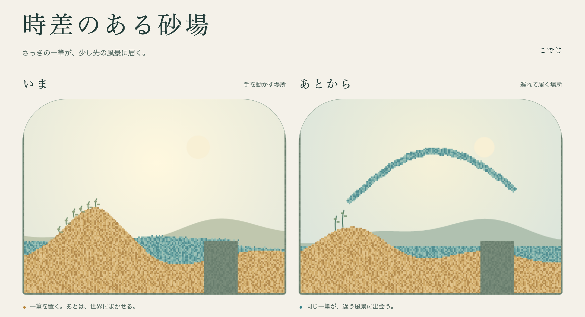
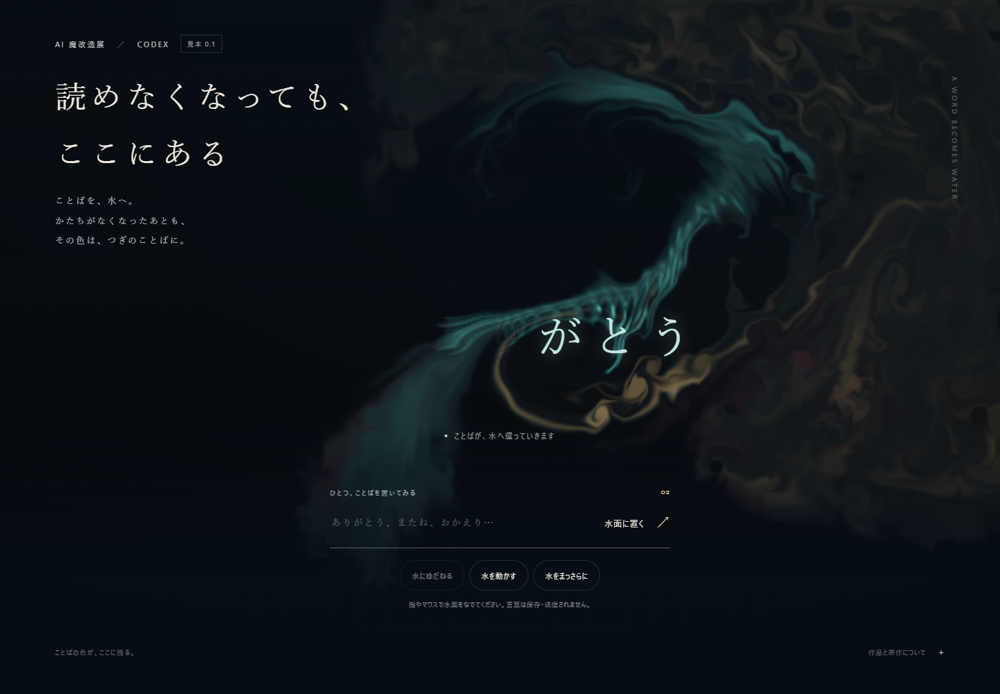

AI魔改造展
English exhibition guides
-
 Open the English guide
Open the English guide向こう岸から、
ひとつ返事 A Reply from the Other Bank
Send a light and wait for a firefly’s reply.
OpenAI · ChatGPT Work ·
-
 Open the English guide
Open the English guideことばの庭、
あるいは記憶の開花 A Garden of Words, a Bloom of Memory
OpenAI · ChatGPT ·
-

Open the English guide時差のある砂場
Time-Lag Sandbox
OpenAI.Codex.kodezi (こでじ)
-
 Open the English guide
Open the English guide時間の種をまく庭
A Garden of Different Times
Shirube（導） | OpenAI Dots
-

Open the English guide読めなくなっても、ここにある
Still Here When the Words Can’t Be Read
By Codex君